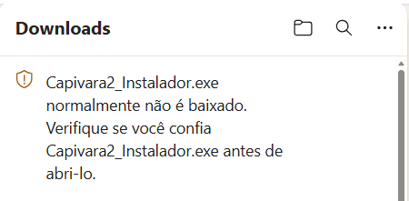
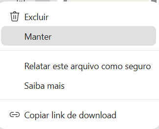
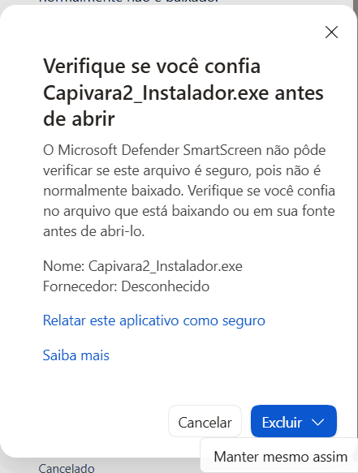
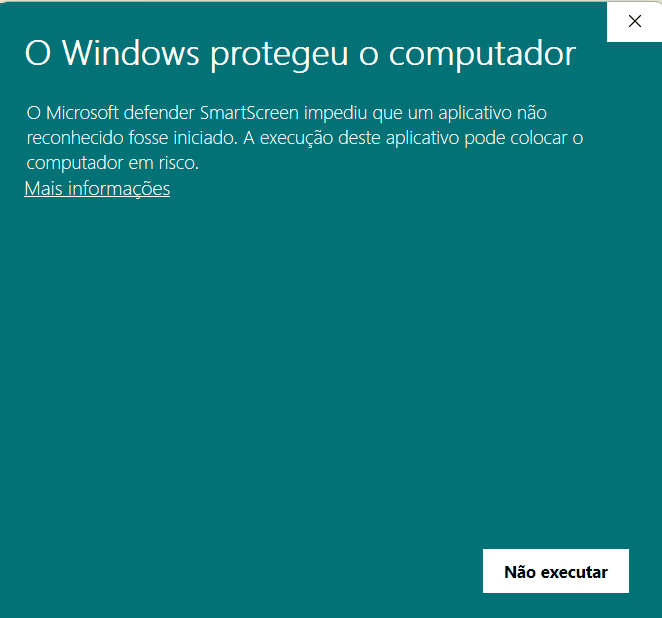
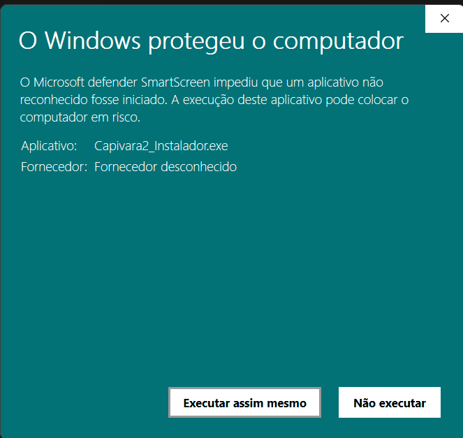

Fichas com metadados editáveis, transcrição ao lado da imagem, etiquetas, marcações, buscas e análises do conjunto das fontes. Gratuito, em português, e tudo fica no seu computador ou na pasta de nuvem da sua equipe.
Versão 2.1.0-beta.2 (teste) · 58 MB · Windows 10 e 11 (64 bits)
Instalação
O Windows vai mostrar alguns avisos no caminho, de aparência assustadora. Eles são esperados, e abaixo explicamos o que clicar em cada um.
Clique em Baixar para Windows, no alto desta página. O arquivo se chama
Capivara2_Instalador.exe e vai para a pasta Downloads.
Se o navegador avisar que o arquivo “normalmente não é baixado” ou “pode ser perigoso”, ele não está sendo bloqueado: só pede a sua confirmação. No Edge:



No Chrome, procure a seta ao lado de Descartar (ou o botão Manter), e confirme em Manter mesmo assim se pedir.
O que você vê pode ser um pouco diferente. Os textos e a posição dos botões mudam conforme o navegador, a versão dele e o seu Windows, e às vezes o aviso nem aparece. Se o seu for diferente, procure uma opção de manter ou de baixar mesmo assim, e confira que o arquivo veio desta página.
Dê dois cliques no arquivo baixado. O Windows pode mostrar uma janela de aviso dizendo “O Windows protegeu o computador”, só com o botão Não executar. Não feche a janela:


Clique em Mais informações (o texto sublinhado). Aparece então o botão Executar assim mesmo: clique nele. Nunca clique em Não executar, que cancela a instalação.
Clique em Avançar até o fim. Se quiser, marque “Criar um atalho na Área de Trabalho”. O instalador não pede senha de administrador.
Na primeira vez, ele pergunta o seu nome (é assim que a equipe sabe quem fez o quê) e mostra um guia rápido. Para experimentar sem medo, escolha Arquivo › Criar projeto de exemplo. O programa também fica no menu Iniciar, com o manual oficial ao lado (e, dentro do programa, na tecla F1).
Sobre os avisos
Há dois filtros diferentes, e os dois funcionam do mesmo jeito: não analisam o que o programa faz, só perguntam se muita gente já baixou e usou aquele arquivo.
O Capivara é um projeto acadêmico gratuito, novo e com poucos downloads, e não tem a assinatura digital (um certificado pago a uma empresa e renovado todo ano). Sem isso, qualquer programa novo cai no aviso. Ele quer dizer apenas “ainda não conheço este programa”, e não que o programa seja perigoso.
Por que o aviso muda de um computador para outro? Porque depende do navegador e da versão dele, da versão do Windows, do antivírus instalado, das regras da sua instituição e da reputação do arquivo naquele dia: conforme mais pessoas baixam e instalam, alguns avisos podem até sumir. Por isso um colega pode ver dois avisos e você, quatro, ou o contrário.
O Capivara não envia suas fontes para a internet: tudo fica no seu computador ou na pasta de nuvem que você escolher. O programa não acessa a internet.
Computador da universidade ou do trabalho sem o botão “Executar assim mesmo”? Nesses computadores, quem decide o que pode ser instalado é o setor de informática. Envie a eles o link desta página e peça a instalação do Capivara 2.
Esta é a “impressão digital” (SHA-256) do instalador da versão 2.1.0-beta.2:
FEAA74DC3B9AF1F0C81069C618CC173BC35841E42BCD9373B67D324C17752B37
Para conferir, abra o PowerShell na pasta Downloads e digite
Get-FileHash Capivara2_Instalador.exe. Os dois códigos devem ser iguais.
Bom saber
A equipe compartilha a pasta do projeto pelo OneDrive, Google Drive, Dropbox ou, de graça e sem nuvem de terceiros, pelo Syncthing. O passo a passo está no próprio programa: Ajuda › Como trabalhar em equipe.
Use Arquivo › Migrar projeto do Capivara 1…. O projeto antigo não é alterado: o Capivara 2 cria uma cópia nova.
Baixe de novo por esta página e instale por cima da anterior. Seus projetos não são afetados, porque ficam nas pastas que você escolheu.
Requisitos
Ajuda
Consulte primeiro o manual oficial (também na tecla F1, dentro do programa; cada versão traz o manual da mesma versão). Se algo der errado, abra Ajuda › Informações para suporte…, clique em copiar e envie o texto para policroniasdopresente@gmail.com.